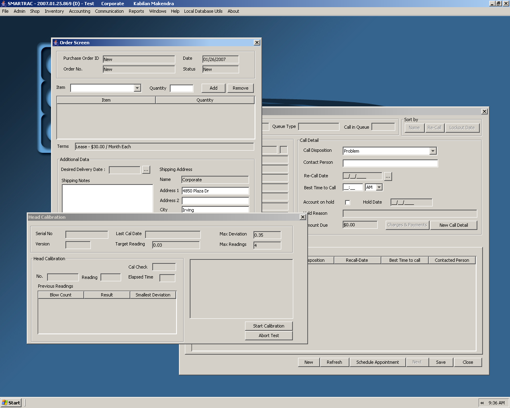
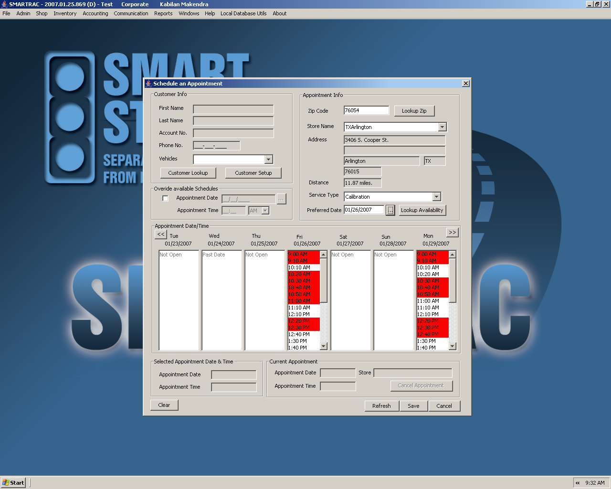

With Help from NetBeans, Teaming Up to Curb Drunk Driving
By their count, the developers at C. Pitman Baker & Associates
handle a roster of 10 software development projects at any given time,
of which six or seven are Java-based and built solely using the
NetBeans platform. It would not be a stretch to call them enthusiastic
fans of the NetBeans IDE.
“NetBeans is the only environment we use,” Chief Operating Officer Chris Gamble said in a recent interview. “NetBeans runs the gamut on
flexibility and complicity, which is why we continue to use it for
every project in Java. It gives us everything we need to get projects
done regardless of the skill level of the developer. It’s a great
system.”
Based in Irving, Texas, CPBinc is a software consulting and design firm
that provides e-commerce solutions, enterprise resource planning (ERP)
systems and custom software development to small and mid-sized companies
in a range of industries: Telecom, Banking, Oil & Gas,
Manufacturing, and more. The company and its team of developers have
been NetBeans users since version 3.6.
“We’ve occasionally looked at other IDEs—Eclipse and Jbuilder—to see
where things stand, but what we keep coming back to is that the
NetBeans tool set is extremely mature and very stable.”
Gamble’s opinion of the NetBeans IDE was echoed by lead developer
Kabilan Makendra and Mark Hughey, head of Sales & Marketing, when all
three gathered to discuss the experience of using NetBeans 5.0 to build
an integrated business application system called SMARTRAC for a client.


(Click
on images for full-size view.)
The client, Smart Start, a
leading provider of ignition interlock
systems, works with judicial agencies around the United States to
monitor the driving habits of convicted drunk drivers. The interlock
system is an in-car alcohol breath screening device that disables the
vehicle if the driver is intoxicated. When Smart Start teamed up with
CPBinc, it wanted a single operating system that would streamline all
aspects of its business: from tracking the manufacture, sale,
installation and repair of the interlock devices, to collecting data
from installed devices and creating reports for the court systems. They also
wanted a web interface that would give judges and probation officers access
to the reports. The main
objective, according to CPBinc, was to enable Smart Start to
concentrate on the task of "separating drinking from driving".
Lead developer Makendra and his team credits the NetBeans Profiler tool
for helping with a particular challenge during the Smart Start project:
the company’s low-power computers.
“When we rolled out the project they still had machines running on 64MB
of memory,” the developer said. “We had to create a system that could
operate under those constratints. Profiler showed where we were taking
more memory and time and we knew where to make improvements.”
Makendra also gave high marks to the IDE’s refactoring tool, calling it
a timesaver for moments when adjustments need to be made mid-way
through projects.
Smart Start has been running the new ERP system across its 400 service
centers since August 2006, and has seen improvements in its
operations. In a written statement about the new system, the company president,
Jim Ballard said: “SMARTRAC has given us much more process control at
our service facilities and ultimately will help us provide better
service to our customers and the courts."
CPBinc recently ported over from NetBeans 3.6 to NetBeans 5.5 and with
minimal difficulty or retraining needed for its developers. Citing
positive feedback from clients, the company plans to continue using the
NetBeans IDE for future projects.
“For one client, using NetBeans we built a system that runs their
entire company,” Gamble said. “After, the owner told us his company
could lose everything, but the system we built would still be
functioning. It’s always good to hear things like that about your work.”